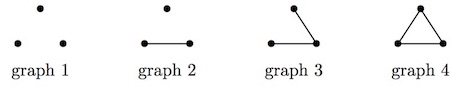

Project Euler 690
Project Euler 690
题目
Tom and Jerry
Tom (the cat) and Jerry (the mouse) are playing on a simple graph \(G\).
Every vertex of \(G\) is a mousehole, and every edge of \(G\) is a tunnel connecting two mouseholes.
Originally, Jerry is hiding in one of the mouseholes.
Every morning, Tom can check one (and only one) of the mouseholes. If Jerry happens to be hiding there then Tom catches Jerry and the game is over.
Every evening, if the game continues, Jerry moves to a mousehole which is adjacent (i.e. connected by a tunnel, if there is one available) to his current hiding place. The next morning Tom checks again and the game continues like this.
Let us call a graph \(G\) a Tom graph, if our super-smart Tom, who knows the configuration of the graph but does not know the location of Jerry, can guarantee to catch Jerry in finitely many days. For example consider all graphs on 3 nodes:

For graphs \(1\) and \(2\), Tom will catch Jerry in at most three days. For graph \(3\) Tom can check the middle connection on two consecutive days and hence guarantee to catch Jerry in at most two days. These three graphs are therefore Tom Graphs. However, graph \(4\) is not a Tom Graph because the game could potentially continue forever.
Let \(T(n)\) be the number of different Tom graphs with \(n\) vertices. Two graphs are considered the same if there is a bijection \(f\) between their vertices, such that \((v,w)\) is an edge if and only if \((f(v),f(w))\) is an edge.
We have \(T(3) = 3, T(7) = 37, T(10) = 328\) and \(T(20) = 1416269\).
Find \(T(2019)\) giving your answer modulo \(1\,000\,000\,007\).
解决方案
1. 规则重述与目标
给定简单图 \(G\)。Jerry 起始在某个顶点；每天早晨 Tom 选择且仅选择一个顶点检查，若 Jerry 正在该点则被抓；若未抓到，则当天晚上 Jerry 必须沿一条边移动到相邻顶点。Tom 只知道图结构，不知道 Jerry 的位置，但要设计一套检查序列保证有限天内必抓到。
称 \(G\) 为 Tom graph 当且仅当 Tom 有必胜策略。题目要求按同构计数的 \(T(n)\)：有 \(n\) 个顶点的 Tom graphs 数量（无标号），求 \(T(2019)\bmod 10^9+7\)。
若 \(G\) 含有一个环 \(C\)，Jerry 可以一直限制在该环上移动。环上每个顶点度为 2，在已知 Tom 当天检查点 \(c_t\) 的前提下，Jerry 总能从当前顶点选择一个邻点 \(\neq c_t\) 作为下一晚位置，从而永远不被抓到；因此只要图含环，Tom 就无法保证有限步必胜。论文记 \(m(G)\) 为Tom 保证抓到 Jerry 所需的最少检查次数（若不存在则记为 \(\infty\)），更一般地，若 \(G\) 含环则 \(m(G)=\infty\)并推出若 \(m(G)<\infty\) 则 \(G\) 必为树（连通情形）在论文中已给出严格论证。因此：Tom graph 一定是森林。
论文引入一个关键禁用子树 \(T^\ast\)：三条长度为 3 的路径共享同一端点（三臂各 3 条边的树，形式化定义：存在一个顶点 \(r\)（中心点存在三条路径\(r-u_1-v_1-w_1, r-u_2-v_2-w_2, r-u_3-v_3-w_3\)，它们都是长度为 \(3\) 的路径）。并证明：
- 若一棵树包含 \(T^\ast\) 作为子图，则 Jerry 可对任何 Tom 检查序列构造躲避序列，可无限生存。
- 若树是 \(T^\ast\)-free（不含 \(T^\ast\) 子图），则 Tom 存在必胜策略（且还能给出最优抓捕时间）。
- 更关键的是一个等价结构刻画：一棵树 \(T\) 是 \(T^\ast\)-free 当且仅当存在一条路径 \(P\)，使得树上任意顶点到 \(P\) 的距离 \(\le 2\)。而这就是lobster 树的定义。
因此得到结论：对任意连通简单图 \(G\)，\(G\) 是 Tom graph 当且仅当 \(G\) 是 lobster 树。再加上 1 个点、2 个点的退化情形也都是可保证抓到的（显然或两天内抓到），于是连通 Tom graphs 的计数就是无标号lobster 树的计数。
森林中 Jerry 永远不会跨越连通分量；若某分量不是 Tom graph，则 Jerry 起始在该分量即可永远躲避；反之若每个分量都是 Tom graph，则 Tom 可以把每个分量的一套必胜检查序列按任意顺序串联执行：若 Jerry 在某分量中，他终会在对应那段检查中被捕，其他分量的检查只是空耗但不影响必胜性。
故：对任意简单图 \(G\)，\(G\) 是 Tom graph 当且仅当 \(G\) 的每个连通分量都是 lobster 树（即 \(G\) 是 lobster 森林）。于是问题转化为按同构计数的无标号lobster 森林有多少个。
设\(a_m\)表示大小为 \(m\) 的连通Tom graphs（即lobster 树）同构类数量；\(T(n)\)：大小为 \(n\) 的 Tom graphs（lobster 森林）同构类数量。对固定的 \(m\)，若森林里恰有 \(k\) 个大小为 \(m\) 的连通分量，那么这些分量只是一组 可重元素的多重集合：从 \(a_m\) 种类型里取 \(k\) 个（允许重复、无序），数量是\(\dbinom{a_m+k-1}{k}.\)对应生成函数贡献为\(\displaystyle\sum_{k\ge 0}\binom{a_m+k-1}{k}x^{mk}=\frac{1}{(1-x^m)^{a_m}}.\)将所有 \(m\) 独立相乘，得到总生成函数\(\displaystyle\sum_{n\ge 0}T(n)x^n=\prod_{m\ge 1}\frac{1}{(1-x^m)^{a_m}}.\)这正是 Euler transform 的形式。
进一步为了计算系数，可对上式取对数并做形式幂级数运算。令\(\displaystyle F(x)=\sum_{n\ge 0}T(n)x^n, T(0)=1.\) 则\(\displaystyle \log F(x)=\sum_{m\ge 1}a_m\sum_{k\ge 1}\frac{x^{mk}}{k}=\sum_{n\ge 1}\frac{1}{n}\left(\sum_{d\mid n}da_d\right)x^n.\)
定义\(\displaystyle c_n=\sum_{d\mid n}da_d.\)对 \(\log F\) 求导得到\(\displaystyle \frac{F'(x)}{F(x)}=\sum_{n\ge 1}c_n x^{n-1}.\)比较系数（将 \(\displaystyle F'(x)=\sum_{n\ge 1}nT(n)x^{n-1}\) 与右侧 \(\displaystyle\left(\sum_{k\ge 0}T(k)x^k\right)\left(\sum_{j\ge 1}c_j x^{j-1}\right)\) 相乘）得递推\(\displaystyle nT(n)=\sum_{k=1}^{n}c_kT(n-k),(n\ge 1),\) 也就是：
\[ T(n)=\frac{1}{n}\sum_{k=1}^{n}c_kT(n-k). \]
无标号lobster 树的序列是 OEIS A130131。其条目给出（等价的）可计算生成函数描述：以分拆生成函数\(\displaystyle P(x)=\prod_{k\ge 1}\frac{1}{1-x^k}\)为基础，定义\(M(x)=xP(x),E(x)=x\Big(P(x)-\dfrac{1}{1-x}\Big),S(x)=\dfrac{1}{1-M(x)}.\)则直径 \(>4\)部分为
\[ B(x)=\frac{E(x)^2S(x)+E(x^2)S(x^2)(1+M(x))}{2}, \]
直径 \(\le 4\)部分为 \[ C(x)=xP(x)-\frac{x^3}{(1-x)^2(1+x)}, \]
因此总生成函数 \[ A(x)=\sum_{n\ge 1}a_n x^n=B(x)+C(x). \]
\(P(x)\) 的系数是分拆数 \(p(n)\)，用Euler 五边形数定理的递推可在 \(O(n\sqrt n)\) 内求得 \(p(0,\dots,N)\)。有了 \(P(x)\) 的截断多项式（到 \(x^{N}\)），就能按上面的代数组合式做若干次多项式乘法与幂级数求逆，得到 \(A(x)\) 的前 \(N\) 项，也即 \(a_1,\dots,a_{N}\)。
代码
1 | import numpy as np |